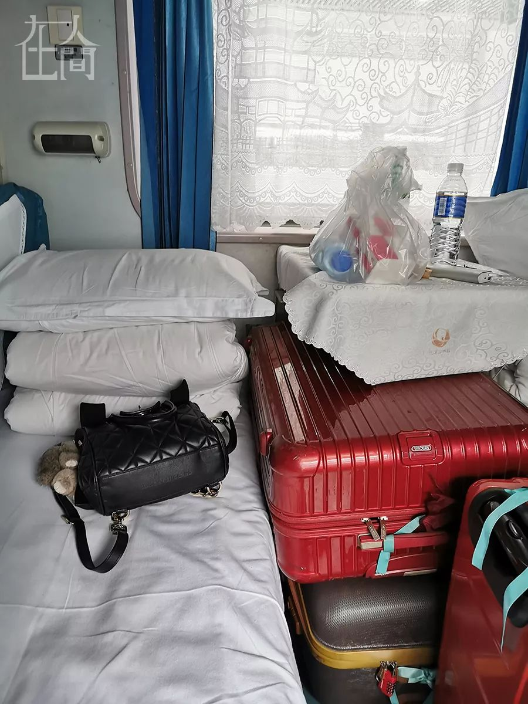
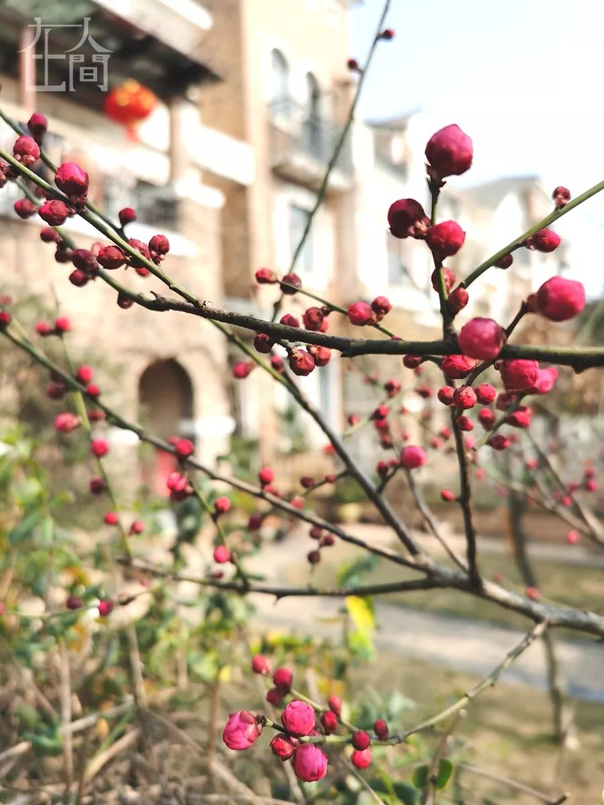
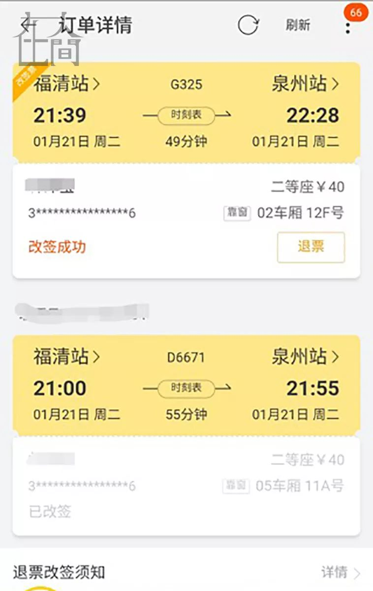
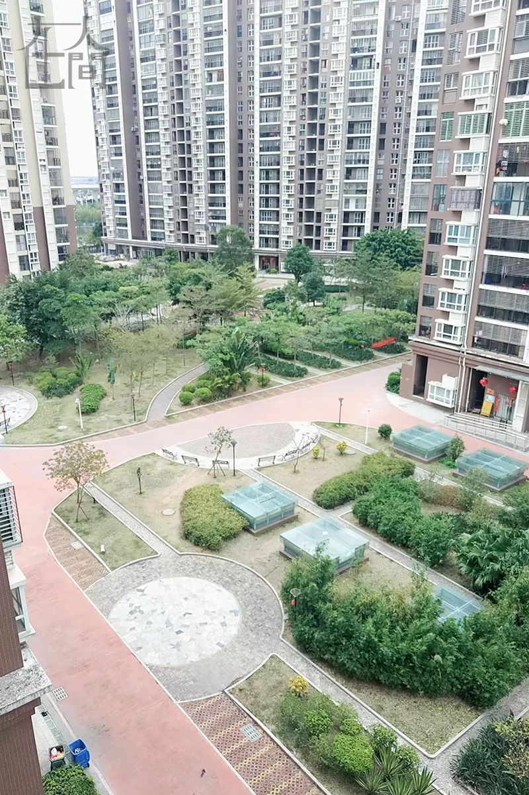
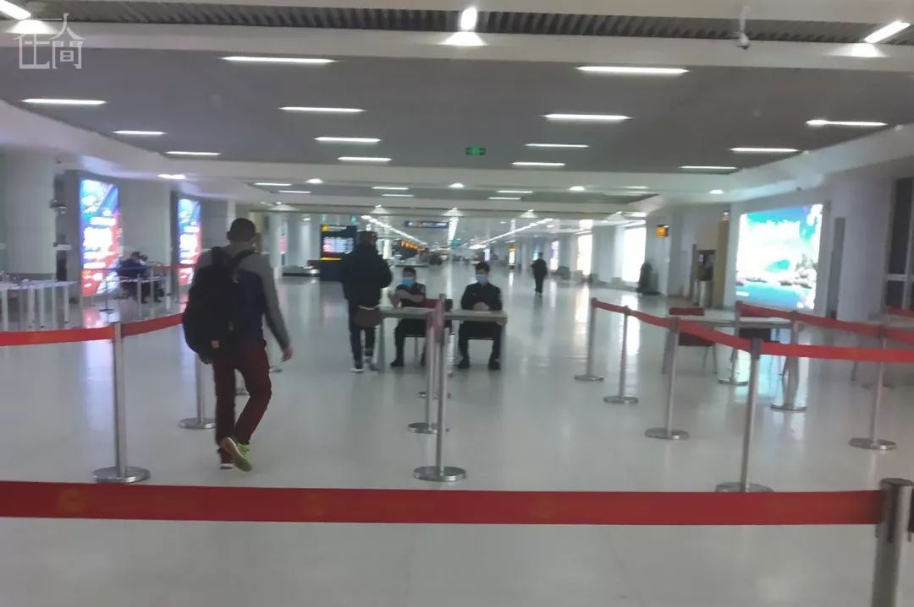
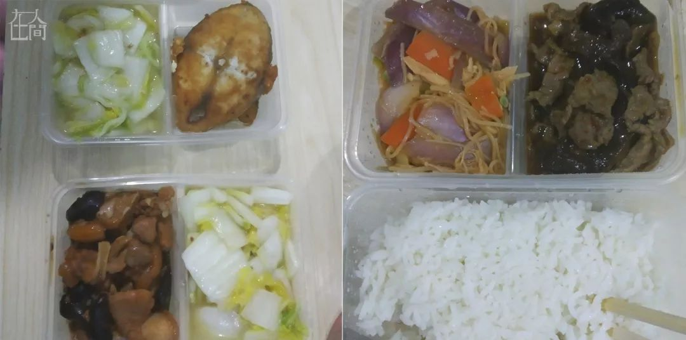
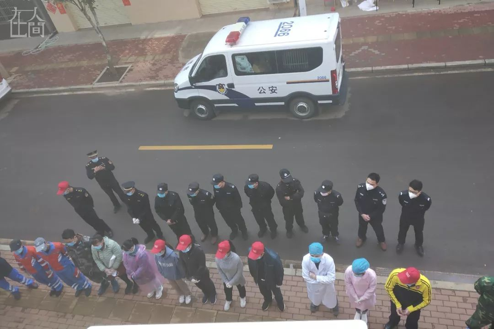
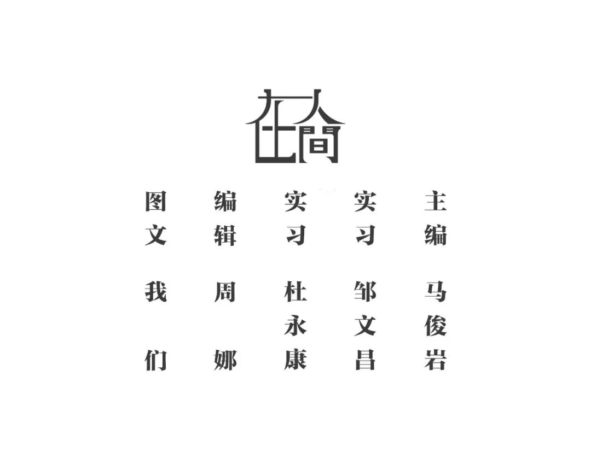

“收留”回不了家的武汉人
原文链接 备份链接 *************▲************* 四川省巴中市巴州区，一辆鄂A车牌（武汉）轿车的车窗上，贴着红岩社区加盖公章的证明，称车主无感冒发烧现象，且正在家自行隔离。 （杜茂林/图） 全文共*4201*字， …


凤凰新闻客户端 凤凰网在人间工作室出品
从多伦多到武汉，从武汉到汝州，从随州到海口，从福清到泉州……本期的4个故事，与4段离家或回家的旅程相关。疫情当前，或长或短的归途变得曲折复杂。有人花了几十个小时从加拿大回到武汉，也有人至今还隔离在酒店，还有人回到了家里……
1⁄4
*1月23日，我从多伦多辗转回到武汉*
*是为了团聚，也不只为了团聚*
2020年1月29日
@纪诗韵Nina
坐标：武汉
我是一个土生土长的武汉人，直到18岁，出国留学后才长期生活在加拿大多伦多。
此时此刻，我在武汉。
去年10月，我就订好了机票，准备回武汉过年。偏偏，我选定了1月23号。这天，收到了武汉“封城”的消息，很多朋友也说，还是取消行程吧，风险太大了……
也许对于别人而言，武汉是最危险的疫情重灾区，是龙潭虎穴，但对我来说，那里是最安全温馨的家！我当时就和上帝祷告，如果让我回去就请为我铺设道路。如果此行不合您心意，就请阻断我前行的机会。祷告后，我心里充满了平安。
到达多伦多机场后，香港国泰柜台值机乘员听说我要飞武汉，叫来了经理。经理说：“你最好不要回去，我们只能把你飞到香港。而且我们接到通知，从24号起，香港飞武汉的航班会被取消，你需要自行安排交通方式。如果一定要回，你得签一份免责协议。”飞机起飞了，当时大脑一片空白，就只有一个念头，总有办法回去的。
香港落地后，我推着3个大箱子前后问了6家航空公司，结果被告知要么取消了，要么已经满员。到武汉高铁也已停运…….最后，我选择坐商务包车到深圳严姐姐家，和干妈一起吃了大年三十的团年饭，再从深圳坐火车回武汉。

■ 左边是我，右边是我亲爱的严姐姐，这是张珍贵的2020大年三十合影。

所幸买到最后一班回武汉的火车票。我从来没有见到过如此空荡荡的火车，整个车厢就我一个人。列车员过来说新年快乐，这是他们最后一趟车，大年初一早上开始，就只载送医护和救助疫情的相关人员了。快到长沙时，上来一位跟我同样刚从国外飞回来，准备回湖北的朋友。我们都开玩笑说，这是史上最艰难的回家路。
我很谨慎，在飞机、火车上全程戴着N95口罩，各种狂洗手。真心感谢这一路上很多好心人帮我推箱子，一共有56公斤，比我人还重。
我到家的那一天，武汉限制跨江车辆，13个区之间也开始部分限行。我是赶在最后时刻回到了家里。
武汉过早，安排！
在国外10年，这是我第一次在武汉家里待这么长时间，妈妈每天变着花样做各种美味的湖北家常菜。虽然封城了没了自由，但家人的爱、来自全世界各地朋友的关心，都让我觉得这个年过得挺幸福的。
我姑姑、姑父也要住院治疗了，但我们都很乐观。丧的信息那么多，我想代表一部分没有生病、待在家里的武汉人发声，告诉大家我们还好。等休假结束后，如果封城继续，我会在家里办公，研究生的课程也会继续。能在家里多待一段时间，陪陪家人，真的挺好的。

爸爸培育了十年的腊梅又开了，一阵阵幽香沁人心脾。梅花是武汉的市花，象征了这座城市面对挑战傲霜斗雪的精神。此刻想起王安石的那首诗：“墙角数枝梅，凌寒独自开，遥知不是雪，为有暗香来”。
2⁄4
*我幸运地改签了动车，未与“新冠”乘客同乘*
*但未躲过小区邻居的质疑*
2020年2月4日
@林津宝 | 普通市民
坐标：福建泉州
在我的印象里，妈妈是个性格好强，做事利落，无论遇到什么事都替我们冲在最前面的人。然而，2020年1月悄然爆发的一场冠状病毒疫情，让我发现原来妈妈是个上了年纪的“胆小鬼”。
1月21日，舍友结婚。我计划在福建福清参加完婚宴，当晚就搭动车赶回泉州，第二天上班。我原本买了21：00的动车票，由于人生地不熟，怕赶不上，我改签成21：39的票。当时福建一派祥和，并没有任何关于疫情的紧张气氛。

回家后，风平浪静。1月23号，疫情突然像火山爆发出来，但我觉得自己离风暴中心较远。2月1日傍晚，突然接到镇派出所、卫生院、居委会、物业的一串电话，他们怀疑我是冠状病毒患者密切接触人员，让我赶紧收拾一下日常用品，120已经在来小区的路上了。我一度蒙圈，问他们何以认为我是密切接触者，但每个人都说，他们只负责通知，具体不清楚。
我妈和我爸开始手忙脚乱，走来走去，唉声叹气，吃不下饭。我也慌得很，但依旧宽慰他们：要是我真接触了感染患者，出去隔离也好，万一真被传染了，还能及时救治。我提着几件换洗衣服潇洒下楼，坐上120。
到了隔离观察点，发现每个医生都穿得和甲壳虫一样，消毒水味道浓烈，气氛一下子凝重起来，我的心也跟着沉了下去。工作人员安排我上10楼，我不死心，问医护人员我到底为什么被隔离。他们打电话去问，然后告诉我：你1月21日晚21点搭乘D＊＊＊次动车，5车厢有人感染冠状病毒。
我记得非常清楚，幸运女神眷顾， 那天晚上我改签成21：39那趟了！我激动地“澄清”自己，一边哆哆嗦嗦地点开手机里面的改签记录，一边拿出身份证来证明自己的“清白”。经证实之后，我被“放”了回来。
在回家的路上，我眉飞色舞地向我爸妈说了我运气如何之好，幸好是改签了。但回到小区，很多人已经在讨论我刚被“抓”走的事，之前，我妈怕被病毒感染，过年以来从未在小区里散过步，但是这一天，她居然和我说，我们在楼下散散步再回去吧。我知道她是想让大家亲眼看到我没有被隔离。散完步回到家里，一桌的饭菜一口没动，都凉了。我妈说：我们老了，没用了，经不起吓，如果你真被隔离了，我和你爸会寝食难安。她还嚷嚷着全家人回乡下老家，整晚都失眠。我知道，她被吓到了。

■ 这是我家小区楼下。
本来以为一切都过去了。
2月3日，晚上8点多，突然很多邻居发微信和打电话过来问：听说你是冠状病毒感染患者的密切接触者，你没事吧？小区业主群炸开了锅。我的个人资料被放到了群里：名字、身份证号码、具体住址等等。大家各种质疑：天啊，既然小区有人患病，物业怎么没说；这一家人有没有下来乱逛，有没有接触过别人；好可怕！她有没有隔离起来，可别害人，有没有谁一栋一单元的，赶紧偷偷去看看……
这份资料，就像一张裸照，引起了围观和“围攻”。当时我被气到浑身发抖，为什么我的资料会被发到各个小区？就算真的搭乘了有患者的动车，我最基本的信息都没办法得到尊重吗？为什么大家都用质问的语气伤害我？我是“受害者”，不是“罪魁祸首”。
我妈再一次被吓到了，她不认识字，无法得知小区群里议论什么，但从我打电话的语气里，知道了像风暴一样席卷而来的闲言碎语。我在群里告知大家，当晚我已经改签，并未搭乘这一趟动车，并将改签信息发到群里。
我打电话给联系过我的派出所某工作人员，询问为什么要泄露我个人信息，他表示并不清楚，但会马上联系物业和相关人员。几位转发我资料的业主，接到派出所电话后，在群里解释也是为全小区人着想，没有恶意。
我妈挨个打电话，给所有认识的人解释这只是一场误会。她甚至觉得自己老了，跟不上网络时代，有种力不从心的焦灼。当晚，她再次失眠了。
我的例子在整个疫情面前微不足道，但仍然影响了我家人的生活。想想武汉人民，想想湖北人民，他们承受了多大的感染风险，又承受了来自四面八方多大的舆情压力。
请在手机或者电脑前面的你善良，给民警减轻一点压力，给社会少制造一点恐慌。
3⁄4
*在海口隔离的第4天，内心从排斥到感谢*
2020年1月31日
@云竹 | 在海口生活的湖北人
坐标：海口某酒店
我是湖北人，一家人在海口生活了5年多。1月22日回到湖北过年，但形势急转直下，在家待了3天后，考虑到诸多不便，26日在随州封路之前，我们坐私家车离开，又从桂林飞回海口。
现在，是我和老婆在海口机场附近某酒店隔离的第4天。每天听着飞机轰鸣声，我由最开始本能的反抗，到试着适应，到现在冷静地分析书写。希望在一个特殊时期，把我个人的所见所识，用文字记录下来。
1月26日晚上，我们到桂林机场。机场一切正常，并没有如网上所说的会直接劝返湖北籍乘客。我们的飞机上只有30多位旅客，零点30分，到达海口美兰机场。

美兰机场到达大厅出口设定了一个临时检查点，所有旅客被要求检查身份证。如果身份证是以42开头或者湖北户籍的，就会进行登记，然后在旁边的集中点测量体温、扫码填写个人信息。最后三五人凑成一波、乘坐一辆由普通公交所改造的专用车（已经消毒、司机已经做防护）前往酒店。
由于运行管理不畅，机场把我们送到酒店，但该酒店已住满，且无人员交接单。等到美兰区政府领导深夜过来，我们已经在寒风中等了两个多小时，中途也有部分人员自行走开。

经过领导协调，我们被临时安排在海边的海口市农民培训中心。住宿条件较为简陋，早上起来没早餐，只有人再次登记量体温。直到10点30分左右，来了一辆13座公务车，把我们12个人塞进去。当时心里有点咯噔。
这次，我们转移到了条件稍微好点儿的酒店，又是量体温、登记行程信息、入住。从夜里零点开始到第二天上午11点多，我们啥吃的都没有，真是饿坏了。作为一个青壮年，我觉得还好，但同行的12人中也有老人和小孩。一时怨言四起，在所难免。
我们所在的宾馆总共有68个房间，截至29日晚上，共入住了82名湖北籍人员。宾馆大概有24名工作人员，分别来自美兰当地农业局、镇政府、卫生院、公安局、联防等部门，还有部分志愿者。根据现场职能，又分为医疗组、宣传组、后勤保障组、安保组。我们夫妻入住的一个房间， 50多平米，进门时有很浓的消毒水味。

在这里，我们吃上了第一顿午餐，白切鸡和生菜，伙食很到位，晚餐是牛肉和一份蔬菜。第二天的早餐是两个包子、鸡蛋再加上一份豆奶，第三、四天早餐是两个面包加鸡蛋、豆奶。从第二天开始，午餐变成两份荤菜混搭，外加一份素菜。
作为一个湖北籍的新海南人，最开始遇到这种“特殊对待”的时候，还是有一定的本能排斥。不过，对这些特殊举措，我们也能够理解和支持。市、区领导、现场工作人员其实都比较辛苦，将心比心，我们也觉得给别人添了麻烦。我们有定时、相对丰盛的餐食，免费口罩、热心的服务、每天两次体温检查……隔离初期，工作人员缺少防护设备，不少人都是只穿了一次性雨衣。

■ 酒店窗外，列队的工作人员。
我们如何度过这段时期呢？幸好有手机，房间Wifi信号也不错，还可以看书，昨天我还在房间来回慢跑30分钟。虽然不能出门，但也是和全国人民共战新冠肺炎。
2月2日，我们转到附近一个四星级标准的酒店。现在的服务更好了，工作人员的装备也慢慢齐全了。我从心里还是感谢海口，特殊时期，他们上上下下的努力和服务，让湖北籍离乡人员感受到温暖。最后想说一句大家熟悉的话，“今天的不便，是为了未来更好的畅通”。
4⁄4
*过了14天的潜伏期，我有一种解除封印的感觉*
2020年2月2日
@冯静 | 武汉某大学研究生
坐标：河南汝州
据说，20200202是“千年不遇的对称日”。于我而言，今天是我从武汉回家的第14天。“新冠状病毒”的潜伏期是14天，此时此刻我有一种解除封印的感觉。
我的老家在河南汝州，我在武汉读研。我个人在这些天的经历也确实有点儿“魔幻现实”，因此记录下来。
1月初，我就在微博上看到“武汉出现不明病毒”、“武汉华南海鲜野味”等热搜，但由于每天都要备课、上课，且活动范围就在学校，也就没有过于在意。直到1月中旬，家人们打来电话询问健康状况，我才意识到这个问题，但也没太放在心上，还宽慰他们说：“没有网传的那么恐怖，我们都还好。”
1月20号，整理好行李准备回家，到郑州后约见一位好友，她来见我时还开玩笑说：“因为你从武汉来，我要买个口罩带上。”我也开玩笑说：“防火防盗防病毒。”戴着口罩聊了会儿天，祝彼此新年快乐，开心地挥手告别。
此时，郑州火车站客流很大，但戴口罩的人不多。爸爸来车站接我，简单问了武汉的情况。一路上，机场、车站、地铁、公交、商场、超市一切照旧。安全起见，我还是测量了体温，36度多一点，正常，家人也就没再问什么。
为了避嫌，我21号、22号没有出门，一天三次测体温，都显示正常。之后，我才放心，在小区散步，还去隔壁小区拜访姑姑。姑夫家有从医的，姑姑格外注意，还劝我说：“这次就在家多待一段时间，晚点儿去学校，武汉这次疫情应该挺严重的，保护好自己啊！”为了让姑姑安心，我答应着说好，但是心想“六月份毕业，论文，答辩，工作……实在不宜在家待太久啊！”
23号，一大早，姑姑就打电话过来 ：“武汉封城了！真的是很严重啊！你要重视起来了！”我第一反应并不是庆幸自己离开了武汉，而是有一种想回去和它一起扛的感慨。
刚挂姑姑的电话，爸爸的电话就响起来了，是他们单位的领导，说是有人举报我是从武汉回来的，想确认一下。爸爸如实回答，并说如有需要一定会积极配合。妹妹怕极了，她担心我被带走隔离。挂完的电话后，父母叮嘱我：“安全起见，你就不要出去找同学了，在家看看书也好。”特殊时期，也要为别人的安全着想，彼此理解。可是被举报这种感觉还是怪怪的。
可能是在家久了，大家都会觉得无聊，同学群变得活跃起来。大家纷纷晒出自己家附近的硬核标语和视频，我们也沉浸在一种“被保护得太好了”的欢愉中，暂时忘记了这次疫情的严重。我和亲友每次聊天的结束语也变成了“平安平安”。很快，网上频繁转发河南的“硬核防护手段”。网友纷纷留言说“河南省太给力了！”“求一个河南省省长！”“河南省人民这防护意识太到位了！”。我们这些曾经被网友黑得最严重的地区，因一次疫情竟被莫名地夸讲起来，还真有点儿不适应。
武汉——这个历史上经历过无数次战争血洗的城市，这个为数以千万人民提供安身立命之地的城市，这个为全世界学生提供学习和思考的城市，这个去年十月份才举办过军运会的城市，现在却承受着无端的指责和谩骂。也许因为自己是河南人的缘故，经历过被黑被随意谩骂，所以特别懂得这种“欲加之罪”的无奈。
为了避嫌，白天我不会出门，晚上八九点小区没什么人后才戴上口罩在楼下散步。谁知第二天爸爸还是接到单位电话，要统计我的学校、学号、身份证号以及坐哪一班列车回来。甚至有人举报我外出活动，爸爸单位直接派了一位工作人员来我家门口看守。妹妹听了后直言：“这不就是监视嘛！”爸爸说：“现在是特殊时期，理解吧。”
晚上陪爷爷聊天，我说：“总是在家闷着，感觉有一点无聊。”爷爷答：“你这才几天，就觉得无聊了！我这都快二十四年了。”我们相视一笑。爷爷二十多年前生了场病，行动不便，每天就是待在家里或者到阳台上走走。小时候总觉得爷爷很高，现在他的背弯得像虾米一样。有时候他看电视，看着看着就睡着了，阳台上晒太阳的时候也是这样，前一秒还在和你说句话后一秒就睡着了。爷爷也老了。他睡不着的时候会想些什么呢？
24号，除夕夜，按照北方的习俗这一天要守岁。可是为了提高免疫力，家人们都默契早早睡去，春晚也没看多少，和朋友之间的新年祝福都变成了“平安平安”。临睡前，妹妹特意来到我的房间说：“姐姐，我们过了一个很特别的春节啊！”
26号，班级群里有位同学突然发消息说：“如果有陌生的号打给你，同学们不要接啊！”问起缘由，才知道好多同学的电话、身份证号信息被泄露了。还有一位同学表示，陌生人加你微信也要注意了，好几个陌生人要加他……
听姑姑说我们全市的医务工作人员，这天开始全员到岗，正式培训，随时待命支援武汉。我们彼此沉默了好久，作为家属，我们太了解医生这个职业在危难时期所承担的责任！我们能做的只能是祈祷他们平安，并且保护好自己“不添麻烦”。
人世无常，像是一根苇草。
31号，我们家所在的城市发现一例感染者，瞬间草木皆兵。父母的电话再次响起，都是来确认我健康状况的。半小时后，直接有医务人员穿着厚厚的防护服来我家测量体温。为保证安全，全家人都量。以后每天天如此，早晚各一次。这样也好，彼此心里都踏实。
我20号到家，2020年2月2日，正好满14天。现在，我和家人都平安，接触到的那位朋友及其家人也平安。我们两个开玩笑说：“这也算是过命的交情了！”
看书、吃饭、做操、玩手机，一天也就过去了。接下来的每一天依旧会积极配合工作人员测体温，希望家人平安！每晚睡前，我都会祈祷疫情快过去，我强烈希望回到武汉去！
武汉呀！快点好起来吧！



新型肺炎疫情牵动人心，
《在人间》现面向全国网友征稿：
(一) 疫区影像日记
如果你身处疫区
请你用照片（视频）和文字记录
你所听闻和见到的一切
照片不少于3张
文字不少于300字
投稿方式：微信联系人间君（zairenjianliving）
（二）抗击疫情真实故事
无论你是一线医护人员、志愿者、
确诊或疑似患者及家属、已治愈出院人士等等，
如果希望讲述疫情相关经历，
请微信联系人间君（zairenjianliving）

原文链接 备份链接 *************▲************* 四川省巴中市巴州区，一辆鄂A车牌（武汉）轿车的车窗上，贴着红岩社区加盖公章的证明，称车主无感冒发烧现象，且正在家自行隔离。 （杜茂林/图） 全文共*4201*字， …
原文链接 备份链接 《战疫口述记》，是燃财经在新型冠状病毒肺炎期间推出的特别栏目，记录疫情亲历者的观察和感受。本文为第3篇，查看前2篇请点击《农村这样防肺炎》《我在武汉战肺炎》。 作者 | 苏琦 金玙璠 孟亚娜 唐亚华 孔明明 魏佳 …
原文链接 备份链接 若干年后回望，这一定是一段值得铭记的日子。因为新型冠状病毒感染的肺炎疫情，许多家庭无法团圆。疫情数据地图的每次刷新都令人揪心。我们和千万武汉人在一起，这不只是一句安慰，因为没有人能够置身事外。 之前，我们向用户征集这 …
原文链接 备份链接 我是肖途，2019 年加入 “BIE别的” 团队的编辑，武汉人。节前，我在最后一刻退掉了回武汉的车票，但这不代表我的春节过得有丝毫轻松。我的爸爸妈妈在武汉，我每天只能与他们视频通话。 早上醒来，北京下过雪了，一场没由来 …
原文链接 备份链接 晃眼过去半个月，至今仍觉得在做梦，不真实。今天最高温有15℃，西安还供着暖气，武汉暖和的都能脱毛衣，太阳下走路一身汗（其实不敢随便减衣服，疫情期间哪怕是普通感冒都能吓死一屋人）。对于无法好好享受北方地暖这个遗憾，我越想 …